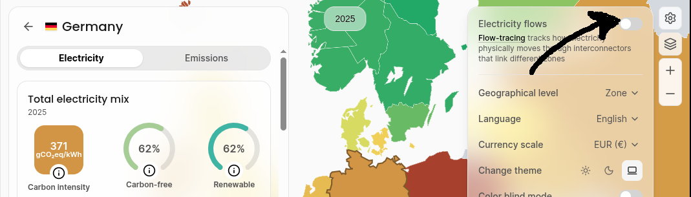

Wie Energie-Simulation.de funktioniert
Allgemeines
Energy-simulation.de simuliert stundenaufgelöst alle Aspekte der
elektrischen
Energieflüsse,
- Den Kraftwerkspark, also erneuerbare Energien, Kernenergie und
konventionelle Kraftwerke
- Verschiedene Energiespeicher mit den Parametern Kapazität,
maximale Lade- und Entladeleistung und Roundtrip-Wirkungsgrad
- Import und Export
- Matchen von Nachfrage unter verschiedenen Strategien wie die
aktuelle Strategie, "Klimaschoner", "Sicherheitsfetischist" und
"Grün".
Zunächst wird mit den Wetterdaten von 2025 das gesamte Jahr faktisch
(Standardeinstellungen) sowie kontrafaktisch (was wäre, wenn wir
jetzt noch Kernkraftwerke hätten? oder doppelt so viel Offshore-Windkraft?) simuliert. In einer späteren
Ausbaustufe werden auch 30-Jahre Stresstests möglich sein.
Im jetztigen Ausbauzustand berücksichtigt der Simulator
keinerlei Energiepreise und nimmt den
best
case einer
Kupferplatte Deutschland an. Strom
kann also in beliebiger Stärke verlustfrei von und zu beliebigen Orten
fließen.
Der Output sind
- Jahresverläufe der Energieflüsse und
Speicherstände, die interaktiv auf Wochenverläufe gezoomt werden
können,
- Curtailment-Faktoren (erzwungene Abschaltungen) und finaler CO2-Footprint,
- und ob in einer gewissen Stunde dieses Jahres im
kontrafaktischen Simulationsszenario ein Blackout bzw eine
Hellbrise-Krise zu erwarten wäre.
Anderen Simulatoren wie der von
Energy-Charts
beschränken sich ausschließlich auf Erneuerbare Energien, die je
nach User-Input starr nach oben oder unten skaliert werden, nicht
jedoch Kernenergie oder konventionelle Kraftwerke. Anders als
mein Simulator ignorieren sie Strategien sowie Curtailment
bzw. Kannibalismus-Effekte. Vielmehr werden Angebot und Nachfrage
durch beliebige viel Speicher (unbekannten Wirkungsgrades) und ggf durch beliebig viel Import und
Export ausgeglichen.
Bedienung
Der Simulator startet automatisch mit dem Wetter, dem Kraftwerks- und
Speicherpark und der Strategie von 2025.
Kontrollpanel (linker bzw oberer Teil des Simulators)
Mit den Schiebereglern können sie den Kraftwerkspark verändern. Es
wird sofort neu simuliert. Mit dem Button "Gehe zu
Speicherattribute/Strategie" können Sie entsprechende die Parameter
der Speicher oder den Import/Export ändern oder eine andere
Strategie auswählen. Jedes Verschieben der Regler und jede neue
Auswahl einer Strategie bewirkt eine Neu-Simulation.
Ergebnisfenster (rechts bzw. unten)
Oben ist das Jahresprofil des Energiemix abgebildet. Durch Klicken oder Ziehen mit
der Maus im oberen Diagramm können Sie unten jeweils einen
detaillierten Wochenzeitraum darstellen.
Wichtig: Die Summe der gerade
erzeugten Leistungen abzüglich der exportierten bzw in Speicher
geleiteten Leistungen (unter der Null-Linie) ergibt genau die Nachfrage
(schwarze Kurve), außer es ist
load shedding, die
Vorstufe eines Blackouts, angesagt.
Mit dem Button "Gehe zur Speicheransicht" im Kontrollpanel sehen Sie
das gleiche für die Speicherzustände (geladene Energie).
Der CO
2eq Footprint und eine evtl Kannibalisierung vor
allem der Windenergie werden unten im Kontrollpanel dargestellt.
Hinweis: 2025 beträgt der Footprint der deutschen
Energiequellen nicht, wie oft
kolportiert, um 340 g/kWh (siehe
z.B.
Electricitymaps in der Standardeinstellung, sondern
um 370
g/kWh, was man sieht, wenn man rechts oben beim
Zahnradsymbol die "Electricity flows" ausstellt. Der Unterschied kommt
durch die "sauberen" Importe von Hydro-Strom aus Skandinavien und
Kernkraftstrom aus Frankreich zu Zeiten, in denen der heimische Mix
besonders "dreckig" ist.

Der Kraftwerkspark
Solar
Der Solar-Output ist direkt proportional zur einfallenden
Gesamtstrahlung (diffus und gerichtet), der im Simulator anhand der
gemessenen Einstrahlungsintensität an 6 Standorten für typische
Regionen (SO, SW, Mitte-Ost, Mitte-West, NO, NW) modelliert
wird. Eine Verfeinerung auf mehr Regionen bringt kaum mehr
Genauigkeit, würde
aber im Simulator zur mangelnden Responsiveness führe.
Solarpanels haben einen
Wirkungsgrad von etwa 20%, der jedoch bei Kälte/Wärme zunimmt bzw
abnimmt. Im Simulator wird die Nennleistung bei einer
Einstrahlungsstärke von 1000 W/m
2 im Frühjahr und
Herbst angenommen. Im Winter bzw Sommer würden dann bei 1000
W/m
2 108% bzw 92% der Nennleistung abgegeben (wobei der
Winter-Wert nie erreicht wird; im Winter haben Solarzellen in
Deutschland einen Kapazitätsfaktor von gerade mal 3%)
Windenergie
Unterschieden weden vier Onshore-Standorte (Süddeutschland,
Mitteldeutschland, NO- und NW-Deutschland) sowie zwei
Offshore-Regionen (Ostsee, Nordsee) mit typischen
Winddaten. Prinzipiell skaliert die Windkraftleistung mit der dritten
(!) Potenz der Windgeschwindigkeit, was anhand der Energieflussdichte
durch eine Fläche A klar wird:
P=W/t=1/2*rho*A*x*v2/t=1/2*rho*A*v3
In Praxi gibt es bei WKAs drei
Grenzgeschwindigkeiten
vci und folgende
Leistungscharakteristik:
- P=0 falls v < vc1
- P=P_N(v/vc2)^3 falls
vc1 < v < vc2
- P=P_N falls
vc2 < v < vc3
- P=0 falls v > vc3 (Sturm)
wobei alle drei Grenzgeschwindigkeiten bei Offshore-WKA höher sind
als bei Onshore.
Kern-, Kohle und Gaskraftwerke
Diese werden durch ihren Kapazitätsfaktor (Anteil der Zeiten, zu
denen sie online sind), ihrer Lastfolgefähigkeit (Prozent der
Nennleistung pro Stundeund) ihrer
minimalen Leistung in Prozent der Maximal- bzw Nennleistung
charakterisiert:
| Kraftwerk | Kapazitätsfaktor |
Lastfolge | Pmin |
| Kernkraft | 90% | 40% / h | 40% |
| Gaskraft | 90% | 100% / h | 10% |
| Kohlenkraft | 90% | 30% / h | 20% |
Sonstige
Biomasse und Wasserkraft wird als gegeben und unveränderbar
angenommen (um den Simulator nicht zu überladen), weitere Kraftwerksarten wie Öl oder Benzin haben nur einen
minimalen Anteil und werden ignoriert.
- Leistung Biomasse: 4.8 GW konstant
- Leistung Laufwasser: 2 GW konstant
Energieflüsse zum Ausgleich: Speicher, Import und Export
Speicher
Es gibt im Simulator drei Speicherkategorien:
- Batteriespeicher: Einstellbare Lade- und Entladeleistung sowie
Kapazität, vorgegebener Roundtrip-Wirkungsgrad 80%
- Hydro-Speicher (Punpspeicher): Vorgegeben Lade- und
Entladeleistung von 9.4 GW, vorgegebene Kapazität von 40 GW (da
Hydrospeicher in Deutschland ausgereizt sind), fester
Roundtrip-Wirkungsgrad 80%.
- Power2Gas bzw H2-Speicher. Beim H2-System ist im
Allgemeinen die Ladeleistung (durch Hydrolyseure) viel geringer als
die Entladeleistung (durch Gaskraftwerke oder Brennstoffzellen),
sodass sie neben der Energie (bis in den zweistelligen TWh-Bereich)
separat geregelt werden können. Der Roundtrip-Wirkungsgrad des
gesamten H2-Systems (Elektrolyse, evtl. Methanisierung, Transport
zur Kaverne, Ein- und Auslagern, Transport zum Gaskraftwerk,
Verbrennen) wird mit 24% angenommen.
Wichtig: In der Speicheransicht wird die letztendlich
nutzbare gespeicherte elektrische Energie abzüglich aller
Wirkungsgrade angegeben. 1 GWh Strom zum Einspeichern ins
Wasserstoffsystem ergeben also nur 240 MWh gespeicherte
Elektrizität.
Import/Export
Einstellbare maximale Import=Exportleistung.
Wichtig::
Da ich die
Kupferplatte
Deutschland annehme, sind die für den Jetztfall 2025 simulierten Importe und
Exporte sehr viel kleiner als die publizierten, die Differenz
(Importüberschuss von 22 TWh) stimmt aber. Das kommt einfach daher,
da ich, im Gegensatz zur Wirklichkeit mit Leitungsengpässen, nie
gleichzeitigen Import und Export an verschiedenen Kuppelstellen annehme.
Strategien
Im Allgemeinen ist (hoffentlich!) immer mehr Strompotential verfügbar
als nachgefragt wird: Würde man den gesamten Kraftwerkspark maximal aufdrehen,
die Speicher mit maximaler Leistung entleeren und so viel es geht
importieren, so
hätte man
oft ein Vielfaches der Last. Die Strategie muss also entscheiden, was
abgeschaltet wird, ob die Speicher nicht besser geladen als entladen
oder ob nicht besser exportiert statt importiert wird. Die Nachfrage
muss 24/7/365 genau gedeckt werden! Im Simulator kann man folgende
Strategien wählen:
Strategie "2025"
Die genaue 2025 realisierte Strategie weicht sicherlich etwas ab, aber
im Wesentlichen gilt folgendes Regelwerk
- Nehme zunächst maximale Einspeisung von Solar und Wind
sowie minimale Leistung konventioneller Kraftwerke an
- Falls dies die Last bereits übersteigt, exportiere,
andernfalls importiere zum Lastausgleich
- Falls immer noch eine Nachfrage-Angebot-Diskrepanz besteht,
gleiche diese, so weit es geht, zuerst mit Pumpspeichern und
Batterien, dann mit H2-Speichern aus.
- Falls immer noch zu viel Angebot besteht, betreibe (so weit es
geht) Curtailment in der Reihenfolge Wind Offshore, Wind Onshore,
Solar. Falls dann immer noch zu viel Angebot besteht, ist der Notfall
Hellbrise eingetreten, der zwei Stufen enthält:
Herunterfahren der konventionellen Kraftwerke unterhalb der
Sicheheitslimits bzw Abschalten und Blackout durch
Schwingungsinstabilität.
- Falls hingegen nach dem Abgleich mit Import/Export und
Batterien zu wenig Angebot besteht, drehe Kohle- und Gaskraftwerke
im Verhältnis 5:4 bis zur maximalen Leistung auf
- Falls immer noch zu wenig Angebot da ist, ist der Notfall
Dunkelflaute eingetreten. Auch dieser hat zwei Stufen:
Zunächst load shedding (einige Nachfrager werden nicht mehr
bedient), dann Blackout durch Angebotsmangel.
Strategie "Klimaschoner"
- Nehme zunächst maximale Einspeisung von Solar, Wind und Nuklear
sowie minimale Leistung konventioneller Kraftwerke an
- Import/Export und Laden/Entladen der Speicher werden vertauscht.
- Falls immer noch zu viel Angebot besteht, betreibe (so weit es
geht) Curtailment in der Reihenfolge Wind Offshore, Wind Onshore,
Solar, Kernkraft. Falls dann immer noch zu viel Angebot besteht, ist
der Notfall
Hellbrise eingetreten, der wie oben behandelt wird
- Falls hingegen nach dem Abgleich mit Import/Export und
Batterien zu wenig Angebot besteht, drehe zuerst
die Gaskraftwerke, erst dann die Kohlekraftwerke auf.
- Falls immer noch zu wenig Angebot da ist, ist der Notfall
Dunkelflaute eingetreten (siehe oben).
Strategie "Safety First"
- Schaue zunächst, was passiert, wenn ich den gesamten Kraftwerkspark auf Maximum
aufdrehe
- Falls zu viel Energie, lade zuerst die Hydro- und
Batteriespeicher auf, dann erst die H2-Speicher
- Ausgleich durch Import/Export.
- Falls im vorherigen Schritt
zu wenig Energie im System ist, entlade die Speicher, erst Hydro, dann
Batterien, dann H2. Letzte Chance für den Ausgleich. Ansonsten
tritt auch hier der Krisenfall Dunkelflaute
ein.
- Falls nach Speicher laden und Export immer noch zu viel
Energie im System, betreibe Curtailment bis zum Minimum in
möglichst klimafreundlicher Reihenfolge (da keine Relevanz
für die Sicherheit):
Kohle -> Gas -> Offshore -> Onshore -> Solar ->
Nuklear. Falls dann immer noch zu viel Energie im System, haben
wir die schon bekannte Hellbrise.
Strategie "Grün"
Diese ist wie die Strategie "Klimaschoner", nur dass Kernkraft zuerst
als auf das Minimum gefahren angenommen wird und nur, wenn es nicht anders
geht, wieder hochgedreht wird.